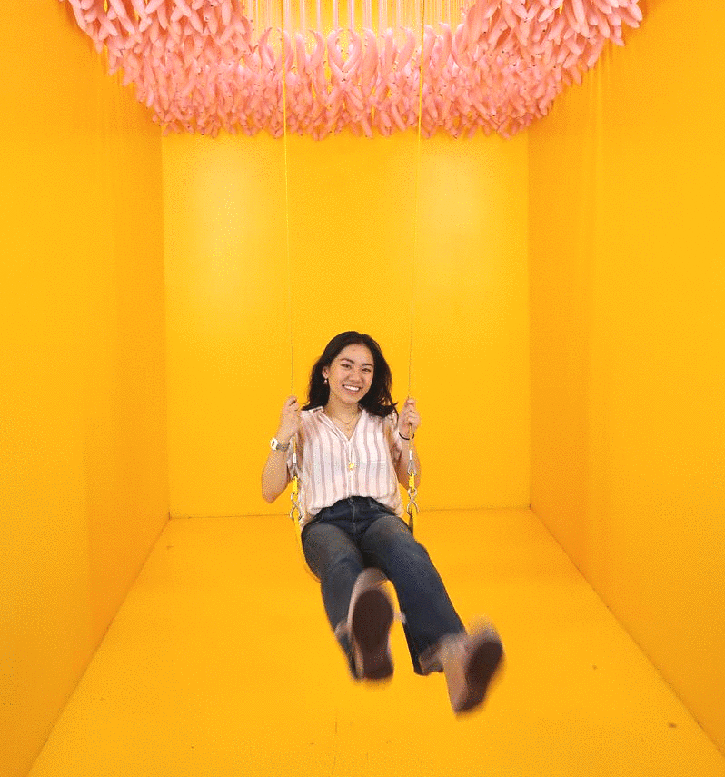

Hello, I’m Tif — a Visual and Product Designer, based in San Francisco, and I love eggs.
Intrigued by the intersection of design, tech, and educational spaces, I’m interested in crafting tools and accessible, inclusive experiences to alleviate pain points and humanize technology in design.Currently at Niantic and 81cents.
Contact
Feel free to look at my resume.Connect with me on LinkedIn.
Let's chat — tiffanytnguy.berkeley.edu
Background
Previously, I studied Art History and Media at the University of California, Berkeley where I focused on the power and complexity of visual spaces, and learned how to decode our visual world. During my time at Cal, I worked as a graphic designer, illustrator, and design lead with a variety of student organizations that helped me jumpstart and hone my skills as a digital creator and mentor.
Most of my professional experience resides in crafting digital graphics and UX design, but I’ve explored web design and VR set design. I’ve worked with startups as the product designer and graphic designer, with company values on self-improvement and fair compensation among underrepresented groups.
What am I up to?
My partner and I have been stretching our knowledge on the fundamentals of bread-making and cooking-at-home. We've made an Instagram to document our meals - burnt or edible.